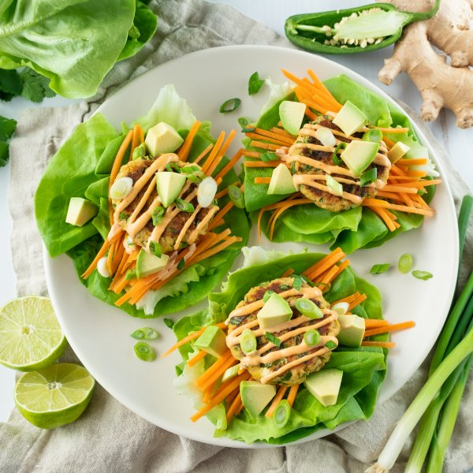

Ginger-Lime Salmon Cake Lettuce Wraps with Spicy Mayo

Nutrition (per serving)
597.7 kcalCalories
31.8 gProtein
20.2 gCarbs
45.2 gFat
Full nutrition table
| Calories | 597.7 kcal |
| Total fat | 45.2 g |
| Saturated fat | 7.5 g |
| Trans fat | 0.2 g |
| Cholesterol | 188.5 mg |
| Sodium | 594.6 mg |
| Carbohydrates | 20.2 g |
| Fiber | 6.7 g |
| Sugars | 4.7 g |
| Protein | 31.8 g |
| Potassium | 1080.7 mg |
| Calcium | 398.5 mg |
| Iron | 3.3 mg |
| Vitamin A | 564.6 IU |
| Vitamin C | 27.9 mg |
| Vitamin D | 639.4 IU |
Cookware
Ingredients
- 1avocado
- 1 headbutter (Boston) lettuce
- 2 mediumcarrots
- 1 small bunchcilantro
- 2eggs
- 2 clovesgarlic
- 2 (1 inch) piecesginger root
- 1 small bunchgreen onions (scallions)
- 1jalapeño pepper
- 1lime
- 2 (7.5 oz) canswild pink salmon, traditional style
- chili-garlic sauce
- mayonnaise
- panko bread crumbs
- salt
- toasted sesame oil
Steps
- Wash and dry the fresh produce.1 lime
2 (1 inch) pieces ginger root
1 jalapeño pepper
1 small bunch cilantro
1 small bunch green onions (scallions)
1 avocado
2 medium carrots
1 head butter (Boston) lettuce - Zest and juice the lime into a medium bowl.
- Peel and grate or mince the ginger; peel and mince garlic. Transfer both to the bowl with the lime.2 cloves garlic
- Quarter jalapeño pepper lengthwise; seed and remove ribs with a spoon. Finely dice and add to the bowl. (Be careful, with jalapeños, do not touch your eyes and ensure you wash your hands after handling or wear gloves while preparing).
- Shave cilantro leaves off the stems; discard the stems and mince the leaves and add to the bowl.
- Trim off and discard ends of the green onions; cut the onions crosswise into ¼-inch pieces at an angle. Add half to the bowl; reserve the rest for garnish.
- Drain salmon. Add to the bowl along with the eggs, mayonnaise, bread crumbs, and salt; mash with a fork to combine.2 (7.5 oz) cans wild pink salmon, traditional style
2 eggs
¼ cup mayonnaise
½ cup panko bread crumbs
¼ tsp salt - Using a ¼ cup measure, portion and form the salmon mixture into ½-inch thick patties.
- Preheat a large nonstick skillet over medium-high heat.
- Once the skillet is hot, add oil and swirl to coat the bottom. Working in batches if necessary, place patties in the skillet and cook until browned on the outside and warmed through, about 3 minutes per side. Remove to a plate.2 tbsp toasted sesame oil
- Meanwhile, halve and pit avocado; slice lengthwise and crosswise while still in the skin and scoop out with a spoon.
- Trim off and discard ends of the carrots. Using a julienne (or regular) peeler, peel carrots into thin noodle-like sticks.
- In a small bowl mix together chili-garlic sauce and mayonnaise.2 tsp chili-garlic sauce
¼ cup mayonnaise - Separate the lettuce into leaves. Pile leaves, in stacks of two per wrap, onto plates. Divide carrots, salmon cakes, and avocado between leaves; top with spicy mayo and reserved green onion. Enjoy!